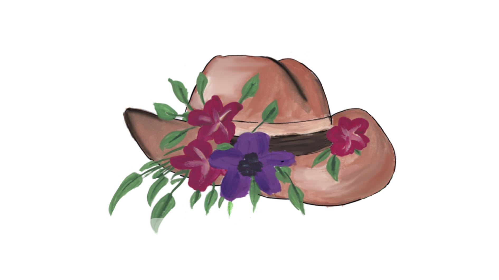

Live Stream
Zak & Sophie's Wedding Live Stream
1st November 2025
Watch Live on YouTube
Live at 11:00 AM NZST
Mobile & Desktop Friendly
Cast to TV Available
How to watch: Click the button above to open the livestream in YouTube. The stream will start automatically at the scheduled time. You can watch on any device or cast to your TV.

Wedding Details
Location
Dunedin, New Zealand
Start Time
1st November 2025, 11am NZST
Please join 15 minutes early
Important Notes
The stream will include the ceremony, reception and speeches
Need Help?
How to watch the YouTube livestream
- Use the direct link provided on this page to go straight to the live stream. It should open automatically in YouTube.
- If the stream hasn't begun yet, you'll see a countdown or placeholder. Once it goes live, the video will play automatically.
- For best quality, tap the gear icon and choose the highest resolution available.
- Rotate your device to landscape or tap the fullscreen icon for a larger view.
- You don't need a YouTube account to watch, but if you want to chat or interact, sign in with your Google account.
- You can AirPlay/Chromecast from the YouTube player to a TV if supported.
🛠️ Troubleshooting
- No sound: Unmute in the player and raise your device volume. Check the Bluetooth output isn’t selected. Test audio on another video to rule out device issues.
- Buffering/freezing: Lower the quality in the gear menu or move closer to Wi‑Fi. Close & reopen YouTube if needed.
- Can’t go fullscreen: Try rotating to landscape, then tap the square icon. On iPhone, ensure orientation lock is off.
- Video not starting: Ensure the stream has started (Scheduled time: 1st November 2025, 11am NZST). Close the tab and click the link again or try a different browser/device.
- Casting to TV: Use the cast icon in the player (Chromecast) or AirPlay from the Share menu on iOS/macOS.